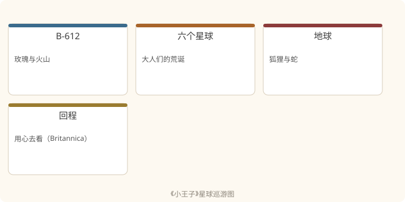

小王子
一、基本信息
| 作者 | 安托万·德·圣埃克苏佩里 |
|---|---|
| 成书/出版 | 1943年出版（Britannica：Le Petit Prince (1943)） Antoine de Saint-Exupery — Encyclopaedia Britannica（百科全书） |
| 国别/地区 | 法国 |
| 时代 | 现当代 · 20世纪 |
| 体裁 | 童话寓言 |
| 语言 | 法语 |

《小王子》星球巡游图（主题·结构图）
二、创作背景
Britannica：'Le Petit Prince (1943; The Little Prince), a child's fable for adults'——写给大人的童话。
Britannica：'has become a modern classic'（已成现代经典）——'a gentle and grave reminder that the best things in life are still the simplest ones and that real wealth is giving to others'。
三、内容脉络
'The story follows a pilot who crash lands in a desert and meets a little boy from a small planet'（坠机的飞行员遇见小行星来的男孩——Britannica）。
小王子的星际巡游：国王、爱慕虚荣者、酒鬼、商人、点灯人、地理学家（通说）。
玫瑰与狐狸：'people can only see rightly with the heart and that what is essential is invisible to the eye'（本质的东西肉眼看不见——Britannica）。
四、主要人物表
| 人物 | 身份 | 说明 |
|---|---|---|
| 飞行员 | 叙述者 | 沙漠中的大人（Britannica） |
| 小王子 | B-612小行星来客 | 星球巡游者（通说） |
| 狐狸 | 驯养者 | '驯养'哲学（通说） |
五、主题与艺术特点
- 本质与眼睛：用心去看（Britannica）。
- 驯养与责任（通说）。
- 大人的荒诞星球（通说）。
六、影响与评论
- Britannica：已成现代经典（a modern classic）；'real wealth is giving to others'。
Antoine de Saint-Exupery — Encyclopaedia Britannica（百科全书） - 全球译本数以百计（通说待核——Britannica 该页未载）。
Antoine de Saint-Exupery — Encyclopaedia Britannica（百科全书）
七、阅读建议
难点
- 寓意层与童话题面的双读。
- 玫瑰/狐狸的象征分配。
- 周克希译本（上海译文出版社，通说待核）。
- 马振骋译本（人民文学出版社，通说待核）。
全书一次读完 → 回读狐狸一章 → 对照《夜航》。
八、待核实
- 1943年纽约 Reynal & Hitchcock 初版与法语版同年细节待核。
- 插图作者自绘说待核。
- 全球发行统计待核。
本页主要来源
安托万·德·圣埃克苏佩里的其他收录作品：小王子